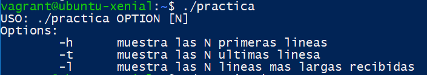
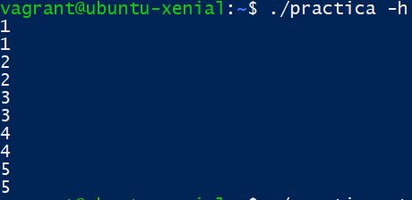
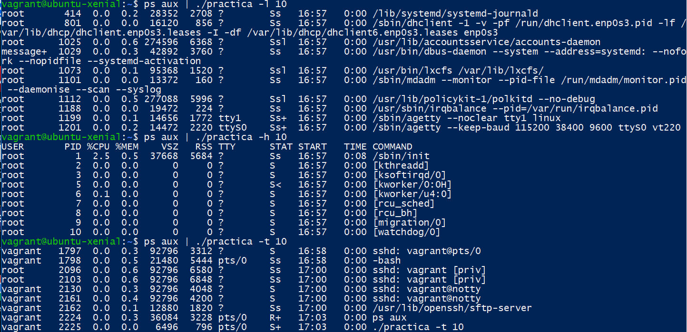
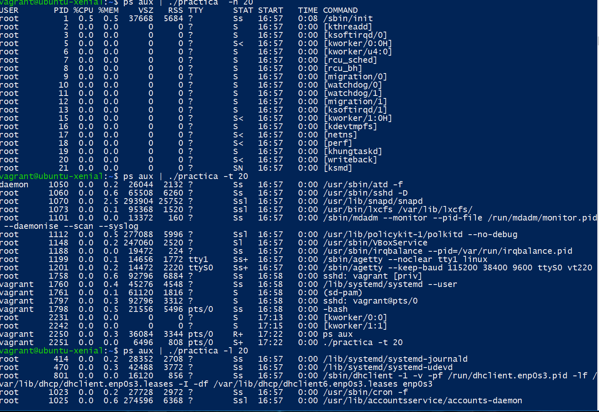
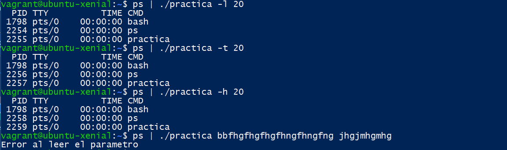

Interfaz de Usuario
Esta práctica consiste en implementar una librería en el lenguaje de programación C. con tres funciones, head, tail y longline, que muestran las N líneas por la salida estándar. Existe las diferentes opciones. La siguiente pantalla muestra la ayuda cuando el usuario no haya pasado ningún argumento.

El valor de N es opcional, si no especificamos el valor N, por defecto es 5.
Luego nos pedirá que introduzcamos algunas líneas con el teclado.

Para simplificar el testeo del programa hemos usado pipe.
Esta pantalla es un ejemplo en el que le damos la entrada y le pedimos que muestre las 10 líneas por la salida estándar. La entrada que le pasamos es el resultado del comando ps aux mediante pipe, que es la lista de los procesos en ejecución.

Este ejemplo es lo mismo que antes solo que le pedimos que muestre más líneas.

Si la entrada que le pasamos no tiene suficientes líneas, es decir, menos que N. Muestra todos sus contenidos.
Si los argumentos que haya pasado son ilegales muestra un mensaje de error.

Descripción de código
Head
La función head muestra las N primeras líneas en la salida estándar
recibidas por la entrada.
Necesitamos una estructura de dato que
nos permite guardar los caracteres leídos de una línea. Utilizamos un
puntero a una cadena de caracteres, char * line.
Reservamos
malloc un tamaño mínimo del buffer, capacity y lo multiplicamos por
tamaño de cada caracter sizeof(char) para establecer el tamaño de la
línea, si la línea que tenemos que leer supera la capacidad actual,
duplicamos realloc la capacidad del buffer.
También necesitamos
una variable entera length que se utiliza como longitud actual de la
línea e ir incrementando length++ cuando leemos más caracteres
getchar, si supera el tamaño de buffer duplicamos. También hemos hecho
la comprobación de que si existe suficiente memoria para leer dichas
líneas.
Es posible que la entrada que nos pase no contiene menos
de N líneas. Por eso tenemos que dividir en casos y hacer el
control.
Cuando llega al final de una línea, guardamos un null
char ‘\0’ en la última posición, reiniciar las variables de control
length=0, ponemos el resultado de la línea leído en la salida y
seguir leyendo hasta N líneas. Al final de la función necesitamos
liberar el puntero.
Tail
La función tail muestra las N últimas líneas en la salida estándar
recibida por la entrada.
Es similar a la función head la
estructura de dato que utilizamos es una lista de cadena de caracteres
char **, entendemos a cadena de caracteres como una cadena de
caracteres char *. La capacidad de la lista es N y la capacidad de
cada cadena está limitado por una variable capacities. Duplicamos
automáticamente el tamaño si es necesario.
Además de una variable para indicar la longitud de la línea actual characterNumber. También tenemos que añadir un índice para llevar la cuenta de líneas leidos lineNumber.
Primero inicializamos la lista de N cadena, vamos leyendo carácter a carácter, cada vez que leemos un carácter aumentamos la variable characterNumber. Si llega al carácter de cambio de línea ‘\n’ añadimos null char al final, reiniciamos el valor carácterNumber a 0, aumentamos lineNumber, y guardamos la línea en la position lineNumber módulo N, así conseguimos reemplazar la última línea laida. Cuando lea la N+1 líneas puedan sustituir la primera línea. Y así cuando llegue al final EOF, envía los N últimos línea leídas al.
Longlines
La función longlines muestra las N líneas más largas recibidas de forma orden de mayor a menor, o todas ellas si hay menos de N líneas, por la entrada de forma ordenada en la salida estándar. Empleamos un procedimiento similar como hacemos en tail. Y cuando el usuario introduzca más de N líneas comprobamos que es más larga que la línea más corta y reordenamos en caso necesario.